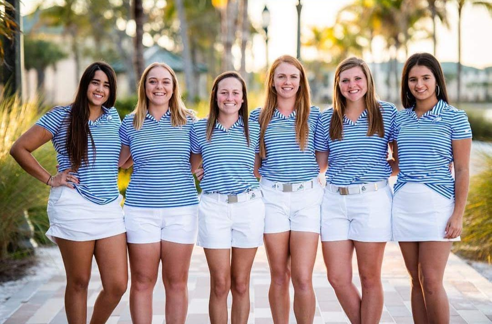

My name is Haley Yerxa and I am a first-year software engineering student at Florida Gulf Coast University (FGCU). I am also pursuing minors in bioengineering and mathematics, as I am interested in a wide range of fields and I am taking the opportunity to explore my interests. I am just beginning to discover my skills sets as I get introduced to the world programming, so while I might not be the most experienced person, I am very eager to learn. I am someone who loves to take on projects and see them through to completion, and I always strive to put forward my best work possible. What I love so much about programming is how it allows you to take on any problem and come up with a unique solution. I love the thrill that I get when I finally get a piece of code working or when that lightbulb goes on in my head when I figure something out. There’s nothing more gratifying for me than finally breaking through on a project and seeing the results from my hard work.

I was born and raised in Ottawa, Canada, but I came to Florida to play Division 1 Golf at FGCU. I’m truly living the dream, playing golf year-round and literally having a beach as my backyard. As a student athlete, I have learned many valuable skills that will stay with me for the rest of my life, such as time management, communication, and teamwork. Growing up, I was a competitive highland dancer, and in addition to playing golf, I have also played many other sports including Volleyball, Field Hockey, Soccer, Swimming, and Cross Country Skiing. Aside from my athletic pursuits, I am also very invested in music, and I spent my high school years mastering many instruments as a part of my school's music program. I am a classically trained pianist and I am also skilled at playing the flute, clarinet, oboe, and tenor saxophone. I am the kind of person who likes to stay busy, and I am always looking to learn and master new skills, which is probably why I love programming so much.